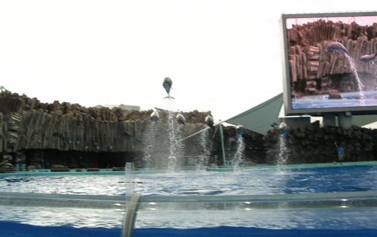
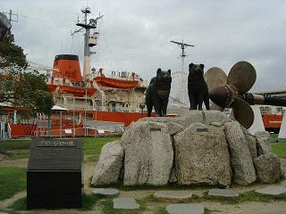
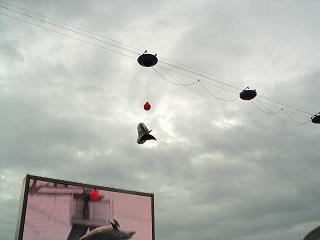
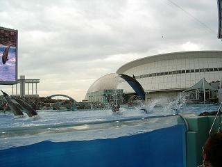
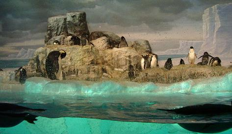
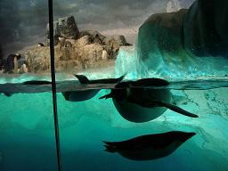

もう何年も前からできていたのですが、一度も行ったことがなかった名古屋港の水族館へ行ってきました。
実は他のところへ行く予定だったのですが、お昼から雨になるという予報が出ていたので急遽水族館に変更となり、車で連れて行ってもらったのですが、思っていたより広い駐車場があり、平日の午前中にしてはまあまあ車が入っており、空いているところならばどこへ止めても良さそうなものを、係員のおじさんから奥の方に止めるよう指示されてしまいました。
地下鉄で行くと名古屋港駅（３番出口）からちょっと歩かなければなりませんが、地上６３ｍの白い帆船をイメージしたポートビルを目指していきますと、右手に昭和４０年から１８年間南極観測船として活躍をした、砕氷船「ふじ」が当時の姿のまま永久係留されているのが見られます。

船内は「南極博物館」となっているようで、タロとジロの後ろにあるスクリューの大きさもさることながら、全長１００ｍ、最大幅２２ｍ、ヘリコプターはなんと３機も搭載されているそうで、すぐ近くにある水族館へのポートブリッジの上からもよく見えました。
ちなみに名古屋港遊覧船もこの近くから出ているようで、大人一人１０００円だそうです。
ポートブリッジを渡りきると通路が二手に分かれており、左に行きますと無料で見られる「カメ類繁殖研究施設」になっており、近づいていくにしたがってするめのような匂いが漂ってきましたが、中へ入っていくとそんなに気になりません。
余計なことかもしれませんが、ブリッジの突き当たりはもう水族館の建物になっており、ここの壁が鏡になっていることから、橋で潮風に乱されたヘヤースタイルを直している人もいるようですが、実はこの向こうはレストランになっており、マジックミラーなんですよ（＾m＾；
入館料は高校生以上は２０００円です。
中へ入ると丁度イルカショーが始まったようなので北館の３階へ直行。
大きなスクリーンが正面にあるメインプールは下の階まで続いており、そちらからは水中の様子が見えるようになっています。
デジカメはシャッターを押してからほんの少し遅れた画像になってしまうので、目の前で５～６ｍジャンプして上から吊るされたボールにタッチするときは、透明になっているプールの側面から水面下を上がってくるイルカを目で追い、水面上に飛び出る瞬間にボールに向けて構えたカメラのシャッターを押しました。

写真だけ見たら何がどうなっているのやらさっぱりわかりませんが、左下のスクリーンを見ていただけると、赤いボールの下でイルカがお腹を上にして跳んでいるのがかろうじて、（かろうじてですよ）おわかりいただけるのではないかと思います。
見たい場所と、絶好のカメラアングルは違うのだということがよくわかりました。（＾ｖ＾；

こちらも、かろうじて一頭だけ全身が写っていますが、秋刀魚のシッポだと言われても、ペンギンが水に飛び込んだところだと言われても、まあ文句は言えませんが。。。
冒頭の写真でもちょっと見えていますが、手前の方を見ていただきますと、プールの側面から水の中が見え、一番前の席の人は水面下と水上の両方が見えて２倍得をしているのではないかと思いますが、水も被ります。（＾ｗ＾;;
このイルカパフォーマンスは平日は11：00 13：00 15：30 の３回行われるそうで、土曜日、日曜日はもう少し回数が多いようです。
スクリーンの裏にはイルカたちの控え室ならぬ控えプールや、シャチの「クー」のプールもありましたが、さすがにシャチは大きいです。
このシャチのトレーニングも平日ならば13：30 からこちらのメインプールで見られるようです。
館内には大きなカメの骨格標本が頭上にぶら下がっていたり、ジオラマと特殊映像で深海の様子を再現するコーナーがあったり、水槽のトンネルがあったりと、変化に富んでいますが、そろそろお腹がすいてきたなぁ。。。と思っていると、
「うまそうー！」
マグロの回遊する水槽の前でつぶやくＭ君の一声で、先ほどのマジックミラーのレストランに行こうという話しになりましたが、さてレストランはどこにあるのだろう。。。？
迷路のような通路をくねくねと歩いてきたので、自分たちのいる位置がさっぱりわからず、「ちょっと見てくる」と言ってひとりどこかへ行ってしまった娘が、吹き抜けになっているエスカレーターを降りていくのが目に入り、どうやらみつかったように指を差しているので、目の前に姿が見えるのですが、その吹き抜けの下の広場までどう行ったらいいものやら。。。
とにかくどこかから下に降りれば何とかなると、近くのエレベーターで下へ降りてみますが、その広場は見当たらず、ちょっと前に見てきた通路を戻りながら横道を探しますが、どんどん戻って行くばかりでトンネルになった水槽を潜った頃になって、どうも違うらしいと引き返し、下の広場が見えるところまで戻ってくると、行き止まりだと思っていた反対側に進むことができ、やっと目的のエスカレーターに乗ることができました。（＾ｗ＾；
合流してレストランに入ってみると、三組くらいの人たちが席が空くのを待っており、この時マジックミラーの窓の外を見ると、傘を差した人の姿がちらほら見えていたので、やっぱり降ってきたんだねぇ。。。と話しながら空腹感に耐えておりました。
「三名のお客様どうぞー！」
と声をかけられて、案内されたのは窓際から一番離れた席で、メニューを開くと
「おおー！ダチョウの香草焼だって!!」
などとハラペコ星人と化していた私たちには、もう外の様子なんてどうでもよくなっており、思わぬところで一度は食べてみたいと思っていたダチョウ料理が食べられそうだと、まずは香草焼をひとつとそれぞれに食べたい物をオーダーしました。
料理が来るまでの間は暇なので、思い出したように外の様子を見ようとそちらに目をやってみると、なぜか何も見えなくなっており、席が遠いせいかもしれないと思っていたのですが、夜になってだんなと話していると、その頃もの凄い土砂降りが来ていたそうで、そんなこととはまったく知らない私たちは、
「牛の脂の少ないような感じだけどイケル！」
「これも美味しいよ！」
などとお互いの料理をつつきあいながら、楽しく食事をしておりました。
お腹を満たして、まだ見ていないところはどこだったのか。。。と歩き始めると、なんとすぐ側にトンネルになった水槽があり、
「私たちはここまで来て引き返したんだよね？」
と、ハラヘリ星人の間に知ったら怒れてくるところでしょうが、人間お腹が膨れれば気持ちに余裕も出てくるというもので、心豊かにナハハハ。。。（＾０＾
再び大小さまざまな水槽を覗いてまわりますが、私が気に入ったのは小さな『くらげ』で、半透明の傘を開いたり閉じたりして優雅に水中を舞う姿は、いつまで見ていても飽きないような幻想的な動きで、ひとつふたつ飼ってみたいような気になりました。

名古屋港水族館の南館は「南極への旅」、北館は「３５億年はるかな旅」というテーマがありまして、このペンギン水槽は南極の海をイメージしています。
これは水槽の真ん中だけを写したものですが、上から人口の雪が降らせてあり、半数近くのペンギンがここに集まって身づくろいなどをしていますが、他のペンギンたちは元気に水の中を泳ぎまわり、大きいものや小さいもの、頭に飾りのついているものやお腹がぽってりとしたものなどが、ひとつの水槽で生活をしています。

ペンギンにもいろいろな性格というものがあるようで、人懐っこいといいますか、好奇心が旺盛といいますか、同じところにじっとして人間ウォッチングをしているものもおり、笑っちゃいました。（＾ｗ＾
あっという間に出口へ出て来てしまったようですが、オーシャンシアターなど時間のかかりそうなところは素通りだったので、じっくり見てまわろうとすれば一日がかりになってしまうかもしれません。
外は傘がなくては駐車場に着く前にずぶ濡れになってしまいそうな雨が降っており、ポートブリッジの一部には大きな水溜りができていて、サンダル履きだった娘たちはジャバジャバとその中を通るはめになり、予定通りに「歩け 歩け」のリトルワールドへ行ってなくてよかった。。。と、話しながら家路につきました。
作成:2004-10-08
コメントはこちら